3 Ett stickprov av normalfördelad data
Datorövning 3 handlar om hypotestest och konfidensintervall för ett stickprov av normalfördelad data. Efter övningen ska vi kunna
genomföra och tolka ett t-test för normalfördelad data,
beräkna och tolka ett konfidensintervall för normalfördelad data,
använda simulerad data för att förstå t-testets egenskaper.
3.1 Repetition från datorövning 2
När man startar en ny R-session bör man ladda de paket man vet kommer behövas med library(). Om paket inte finns installerade måste man först köra install.packages().
I datorövning 2 tittade vi på hur insamlade variabler kan sammanfattas med lägesmått och spridningsmått. Ett enkelt sätt att ta fram dem är att använda summarise() och ange de mått och variabler man vill använda. Vi hade uppe ett exempel på data från Gapminder som vi importerade från en excel-fil. För nu kan vi dock hämta datan från paketet gapminder.
# install.packages("gapminder")
library(gapminder)
gapminder %>%
filter(year == 2007) %>%
group_by(continent) %>%
summarise(`Livslängd, medel` = mean(lifeExp),
`Befolkning, median` = median(pop),
`Bnp per capita, standardavvikelse` = sd(gdpPercap))Beskrivande mått sammanfattas ofta i någon enkel vetenskaplig graf. Två vanliga val är lådagrammet, som illustrerar kvartiler och möjliga extremvärden, och stapeldiagrammet med felstaplar. Vi ger först ett exempel på ett lådagram över livslängd per kontinent uppdelat efter år.
Därefter ett exempel på ett stapeldiagram med felstaplar för samma data. Felstapeln ges av standardavvikelsen.
dat_sum <- gapminder %>%
group_by(continent, year) %>%
summarise(Mean = mean(lifeExp),
SD = sd(lifeExp))
dat_sum## # A tibble: 60 × 4
## # Groups: continent [5]
## continent year Mean SD
## <fct> <int> <dbl> <dbl>
## 1 Africa 1952 39.1 5.15
## 2 Africa 1957 41.3 5.62
## 3 Africa 1962 43.3 5.88
## 4 Africa 1967 45.3 6.08
## 5 Africa 1972 47.5 6.42
## 6 Africa 1977 49.6 6.81
## 7 Africa 1982 51.6 7.38
## 8 Africa 1987 53.3 7.86
## 9 Africa 1992 53.6 9.46
## 10 Africa 1997 53.6 9.10
## # ℹ 50 more rows3.2 Test av medelvärde för normalfördelad data
Om man har en normalfördelad variabel och vill testa om populationens medelvärde är skilt från något hypotetiskt värde \(\mu_0\) kan man använda ett t-test för ett stickprov. Ta som exempel följande data på 8 observationer av havreskörd. Av någon historisk anledning vill man testa om populationsmedelvärdet är skilt från 50.
## x
## 1 49.8
## 2 58.4
## 3 49.4
## 4 57.1
## 5 52.2
## 6 49.1
## 7 44.6
## 8 55.4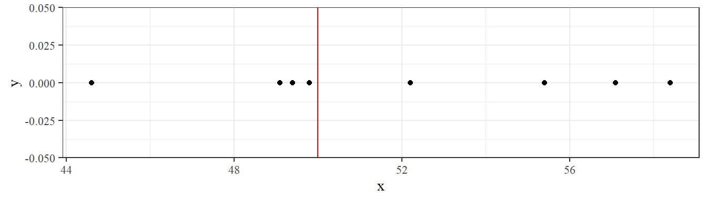
I grafen ser vi att värdena ligger jämt spridda kring 50, så 50 är nog ganska rimligt som medelvärde, men låt oss göra ett formellt test.
I R kan ett t-test genomföras med t.test().
##
## One Sample t-test
##
## data: dat$x
## t = 1.2086, df = 7, p-value = 0.266
## alternative hypothesis: true mean is not equal to 50
## 95 percent confidence interval:
## 48.08713 55.91287
## sample estimates:
## mean of x
## 52Utskriften ger ett p-värde från vilket vi kan dra en slutsats. I det här fallet är p-värdet högt (över fem procent) så vi kan inte förkasta nollhypotesen (vilken är att populationsmedelvärdet är lika med 50).
Vi tittar nu på stegen bakom t-testet. Ett t-test bygger, som alla hypotestest, på en serie steg:
- sätt upp en nollhypotes och en alternativhypotes,
- beräkna ett testvärde från en testfunktion,
- identifiera en testfördelning,
- beräkna ett p-värde, eller uppskatta ett genom att ställa testvärde mot ett kritiskt värde,
- dra en klar slutsats om statistisk signifikans.
Vi vill testa om medelskörden är skild från 50, så hypoteser ges av
- H0: mu lika med 50
- H1: mu ej lika med 50
Alternativhypotesen är tvåsidig - vi tittar både på möjligheten att populationsmedelvärdet är större och på möjligheten att det är mindre.
Uppgift 3.1 (Ensidig mothypotes) Hur hade hypoteserna sett ut om vi ville testa om medelvärdet är större än 50?
Vårt mål är att testa ett medelvärde och det är rimligt att anta normalfördelning för den undersökta variabeln. Det lämpliga testet är då ett t-test för ett stickprov och testvärdet kan beräknas av en testfunktion som ges av det observerade stickprovet minus nollhypotesens värde, delat på standardavvikelsen delat på roten ur antalet observationer. Låt oss beräkna detta i flera steg och jämföra med utskriften från t.test().
## [1] 52## [1] 4.680354Uppgift 3.2 (Operationsordning) Räkna ut samma sak på miniräknare eller telefon. Vad händer om man missar parenteser runt 4.680354 / sqrt(8)?
Uppgift 3.3 (t-värdets delar) Vad händer med t-värdet om något av följande händer, givet att övriga delar är desamma? Det observerade medelvärdet (här 52) ökar. Nollhypotesens värde (här 50) minskar. Standardavvikelsen (här 4.680354) minskar. Antalet observationer (här 8) ökar.
Testa genom att ändra värdena i kodstycket ovan och beräkna t_value på nytt.
Nästa steg är att identifiera testfördelning, det vill säga den slumpfördelning testvärdet följet om nollhypotesen är sann. Fördelningen ges i regel av statistisk teori. I det här fallet är testfördelning en t-fördelning med n - 1 frihetsgrader. Vi har åtta observationer, så antalet frihetsgrader blir 7. I R kan man ta fram täthetsfunktionen för en t-fördelning med dt() och fördelningsfunktionen med pt().
dat_t <- data.frame(x = seq(-4, 4, 0.1)) %>%
mutate(p = dt(x, df = 7),
P = pt(x, df = 7))
ggplot(dat_t, aes(x, p)) +
geom_line()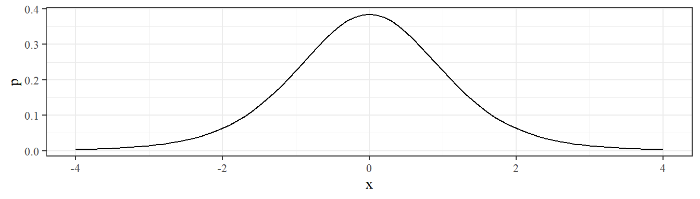
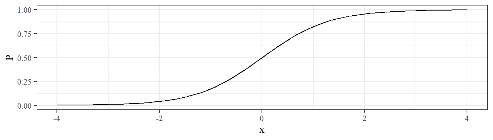
Nästa steg i ett hypotestest är att ta fram ett p-värdet. P-värdet kan illustreras som ytan under t-fördelning bortom test-värdet. I ett tvåsidigt test tar vi med bägge svansarna.
ggplot(dat_t) +
geom_line(aes(x, p)) +
geom_ribbon(aes(x = x, ymin = 0, ymax = p), data = dat_t %>% filter(x > abs(t_value)), fill = "salmon") +
geom_ribbon(aes(x = x, ymin = 0, ymax = p), data = dat_t %>% filter(x < -abs(t_value)), fill = "salmon")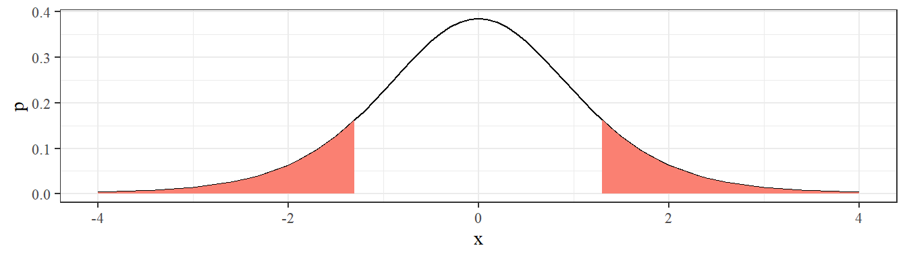
De röda ytorna i svansarna motsvarar p-värdet. De anger sannolikheten att få ett större t-värde än det vi fått, under antagandet att nollhypotesen stämmer. Vi kan beräkna p-värdet med pt(). För ett tvåsidigt test multipliceras värdet med 2.
## [1] 0.2660402P-värdet ges av 0.266. En tolkning av det är om försöket upprepas ett stort antal gånger och nollhypotesen är sann, kommer vi 26.6 procent av gångerna få ett större testvärde än 1.2086. Det vi observerar är ganska sannolikt under nollhypotesen, vilket tyder på att nollhypotesen är rimligt.
Det avslutande steget är att dra en formell slutsats och ge ett tydligt svar. Det klassiska sättet är att jämföra p-värdet med en förbestämd signifikansnivå, oftast fem procent. Här är p-värdet över den nivån, så vi kan inte förkasta nollhyptesen. Slutsatsen är att det inte finns någon signifikant skillnad från 50 i havreskörd.
Uppgift 3.4 (Kritiskt värde) Om man gör ett t-test för hand kan man inte enkelt ta fram ett p-värde, men kan se om p-värdet är större eller mindre än fem procent genom att ställa testvärdet mot ett kritiskt värde. Använd en tabell för t-fördelning för att hitta det kritiska värdet.
I R kan man ta fram kritiska värden med qt(). För fem procent i svansarna har man 0.025 i respektive svans och det kritiska värdet ges av
## [1] 2.364624Som visades i början har R en specifik funktion för t-testet, t.test(). Funktionens argument är datan man testar och ett nollhypotesvärde mu. Om man vill ha ett ensidigt test kan det sättas med argumentet alternative. För vår data ges testet av
##
## One Sample t-test
##
## data: dat$x
## t = 1.2086, df = 7, p-value = 0.266
## alternative hypothesis: true mean is not equal to 50
## 95 percent confidence interval:
## 48.08713 55.91287
## sample estimates:
## mean of x
## 52Funktionen skriver ut det beräkna t-värdet, antal frihetsgrader och p-värdet.
Uppgift 3.5 (Ensigt test) Använd ?t.test för att ta fram funktionens hjälpsida. Försök att utifrån hjälpsidan beräkna ett ensidigt test för att se om medelskörden är större än 50.
Uppgift 3.6 (Ny nollhypotes) Upprepa det tvåsidiga testet från exemplet ovan. Testa denna gång om medelskörden är skild från 48. Dra en tydlig slutsats.
Uppgift 3.7 (Importera smältpunkt-data) På canvassidan finns en excelfil med data för kursens uppgifter Uppgiftsdata.xlsx. Fliken Smältdata innehåller data för en legerings smältpunkt.
Ladda ner filen till lämplig plats på datorn och importera datan genom att fylla i följande rad.
Uppgift 3.8 (Plotta smältpunkt-data) Illustrera smältpunktsdatan på samma sätt som exempeldatan genom att fylla i följande kod. Vårt mål är att testa om medelvärde är skilt från 1050, vilket här kan noteras med ett vertikalt streck vid 1050.
Kan man utifrån grafen säga om 1050 är ett rimligt medelvärde för populationen, givet det stickprov vi observerar?
Uppgift 3.9 (Hypotestest för hand) Genomför ett t-test för hand för att se om medelsmältpunkten är skild från 1050. Skriv ut tydliga hypoteser. Medelvärde och standardavvikelse ges av följande.
Ett kritiskt värde kan tas från en tabell över t-fördelningen eller beräknas i R med
Uppgift 3.10 (Hypotestest i R) Genomför ett t-test med funktionen t.test() för att se om medelsmältpunkten är skild från 1050.
3.3 Konfidensintervall för normalfördelad data
För exemplet på havredata tittade vi på två olika värden för nollhypotesen.
Från p-värdena kan man dra slutsatsen att förkasta vid nollhypotesen att mu är 48, men inte förkasta vid nollhypotesen att mu är 50. Värdet 50 är alltså i någon mening ett mer troligt värde på populationens medelvärde än vad 48 är. Konfidensintervall kan ses som en generalisering av den tanken: ett konfidensintervall ger ett spann av värden där man inte förkastar. Intervallet tolkas vanligen som att det täcker det sanna populationsmedelvärdet med en viss konfidens.
För ett stickprov och antagen normalfördelning ges konfidensintervallet av
medelvärde ± kvantil från t-fördelningen x standardavvikelse delat på roten ur antalet observationer
Kvantilen från t-fördelningen kan hämtas från en tabell (samma som det kritiska värdet i testet) eller genom R. Antalet frihetsgrader ges av antalet observationer minus ett. I det här fallet ges delarna av
## [1] 52## [1] 4.680354## [1] 2.364624och konfidensintervallet ges alltså av
52 ± 2.365 * 4.680 / sqrt(8)
Uppgift 3.11 (Konfidensintervall för hand) Ta fram medelvärde, standardavvikelse och kritiskt värde för smältpunktsdata, med hjälp av R (eller en tabell för det kritiska värdet). Beräkna konfidensintervallet för smältpunktsdatan för hand.
Funktionen t.test() ger automatiskt ett konfidensintervall, direkt under utfallet av testet. Notera att konfidensintervallet inte beror på nollhypotesen. Konfidensintervall kan beräknas med skilda konfidensnivåer, oftast 95 procent, vilket sätts med argumentet conf.level.
Uppgift 3.12 (Konfidensnivå) Gör lämplig ändring i koden nedan för att beräkna ett 99-procentigt konfidensintervall, istället för ett 95-procentigt.
##
## One Sample t-test
##
## data: dat$x
## t = 31.425, df = 7, p-value = 8.538e-09
## alternative hypothesis: true mean is not equal to 0
## 95 percent confidence interval:
## 48.08713 55.91287
## sample estimates:
## mean of x
## 52Är ett 99-procentigt konfidensintervall bredare eller smalare än ett 95-procentigt?
Uppgift 3.13 (Ensidiga konfidensintervall) I en tidigare uppgift användes argumentet alternative för att göra ett ensidigt test med t.test(). Vad händer med konfidensintervallet om man anger ett ensidigt test?
Uppgift 3.14 (Konfidensintervall för smältdata) Ta datan över smältpunkter och beräkna ett konfidensintervall med t.test(). Tolka intervallet.
Ett konfidensintervall illustreras ofta med en felstapel. Vi kan lägga till en till den punktgraf vi tidigare sett för observationerna.
interval <- t.test(dat$x)$conf.int
ggplot(dat, aes(x, 0)) +
geom_point() +
annotate("errorbar", xmin = interval[1], xmax = interval[2], y = -1, width = 0.1)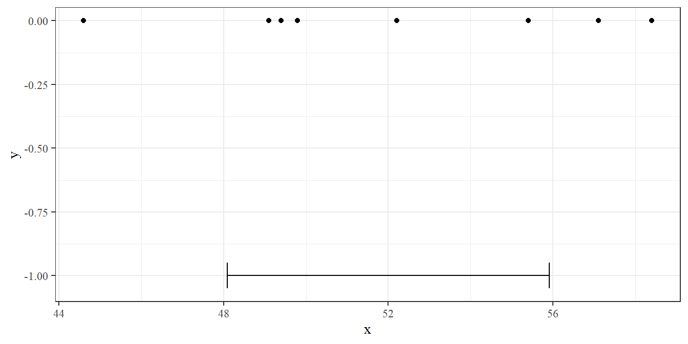
Uppgift 3.15 (Illustration av smältdata) Använd exempelillustrationen för havredata till en liknande illustration av smältpunktsdatan.
3.4 Normalfördelad data och centrala gränsvärdesatsen
Eftersom t-testet bygger på att data är normalfördelad är det förstås bra att kunna undersöka om det antagandet stämmer. Ett sätt är att göra ett histogram över datan - om den underliggande variabeln är normalfördelad bör stickprovet ge den typiska klockformen. Det här kräver dock ganska mycket data. Ta ett histogram för havredatan som exempel

Uppenbarligen helt meningslöst. Låt oss titta på histogram över genererad normalfördelad data.
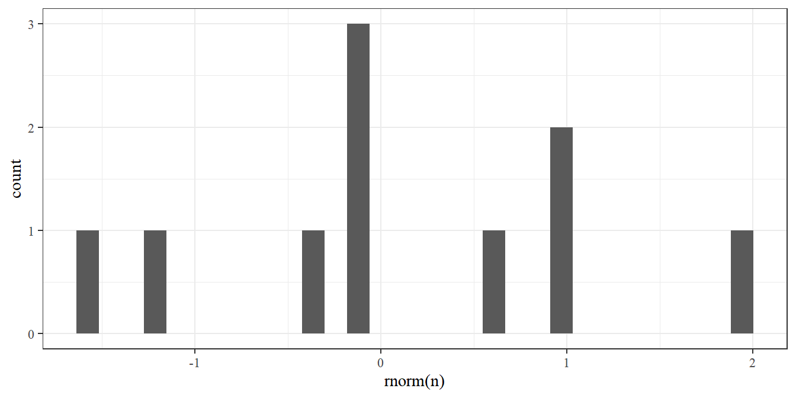
Uppgift 3.16 (Histogram för normalfördelning) Testa koden ovan för lite olika värden på n. Det kan vara nyttigt att sätta antalet staplar bins för att få ett bättre histogram. Hur stort måste n vara för att ge en karaktäristisk klockform för histogrammet?
Ett annat vanligt alternativ för att grafisk undersöka om data följer en ungefärlig normalfördelning är en QQ-graf (QQ-plot). En qq-graf är ett spridningsdiagram med teoretiska kvantiler på en axel och datans kvantiler på den andra axeln. Om data perfekt följer en normalfördelning kommer grafen visa en rak diagonal linje. En QQ-graf kan tas fram med qqnorm() eller geom_qq() i en ggplot. En diagonal linje för jämförelse kan läggas till med geom_qq_line().
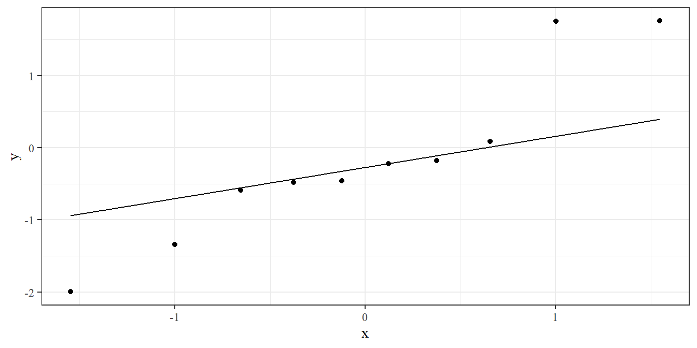
Punkterna ligger nära linjen. Vi kan återigen demonstrera med lite genererad data.
n <- 10
dat_norm <- data.frame(x = rnorm(n))
ggplot(dat_norm, aes(sample = x)) + geom_qq() + geom_qq_line()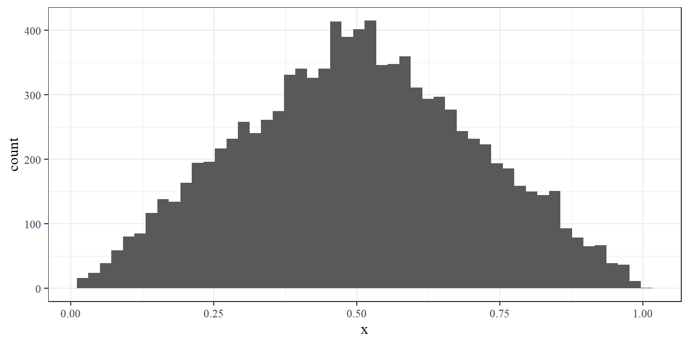
Uppgift 3.17 (Histogram för normalfördelning) Funktionen runif() ger slumpmässiga värden mellan 0 och 1. Testa att ändra i kodstycket ovan så att slumptal genereras med runif() istället för rnorm(). Hur påverkar det QQ-grafen?
3.5 Centrala gränsvärdesatsen
Även om data inte är normalfördelad kan t-testet vara ett lämpligt val av test. Detta beror på centrala gränsvärdesatsen, som säger att summor (och därmed även medelvärden) av lika slumpvariabler går mot en normalfördelning där antalet observationer ökar. Den tidigare uppgiften gav att runif() inte ger normalfördelad data. Vad händer om vi tar medelvärdet av flera observationer från runif()? Följande kod beräknar tiotusen medelvärden av två observationer.
n <- 2
dat_sim_unif <- expand_grid(Observation = 1:n, Upprepning = 1:10000) %>%
mutate(x = runif(n())) %>%
group_by(Upprepning) %>%
summarise(x = mean(x))
ggplot(dat_sim_unif, aes(x)) + geom_histogram(bins = 50)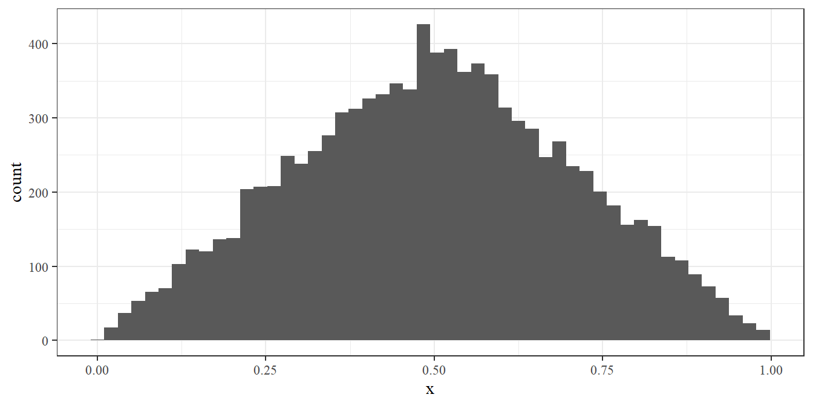
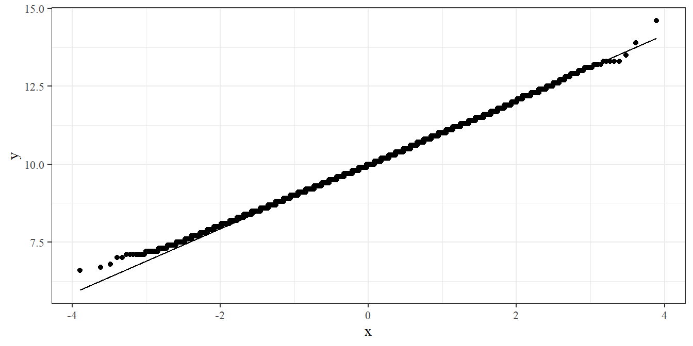
Fördelningen för summan är inte likformig, men inte heller särskilt normalfördelad. Vad händer om vi ökar antal termer i summan?
Uppgift 3.18 (Antalet observationer för normalfördelning) Vad måste ändras i koden ovan för beräkna medelvärdet av tio observationer? Följer de medelvärdena en ungefärlig normalfördelning? Vad är det lägsta antalet observationer som ger ungefärligen normalfördelade medelvärden?
Under en tidigare datorövning såg vi exempel på diskreta fördelningar: binomial- och poissonfördelningarna. Vi ska senare titta på specifika test för variabler som följer en diskret fördelning, men centrala gränsvärdesatsen kan även då rättfärdiga ett t-test. Ta som exempel medelvärdet av tio observationer som följer en poissonfördelning med lambda = 10.
n <- 10
lambda <- 10
dat_sim_unif <- expand_grid(Observation = 1:n, Upprepning = 1:10000) %>%
mutate(x = rpois(n(), lambda = lambda)) %>%
group_by(Upprepning) %>%
summarise(x = mean(x))
ggplot(dat_sim_unif, aes(x)) + geom_histogram(bins = 30)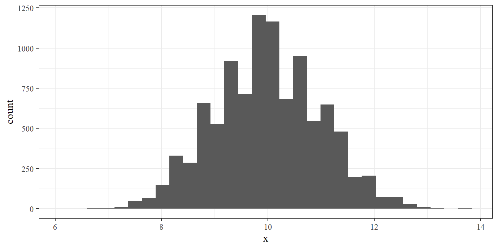
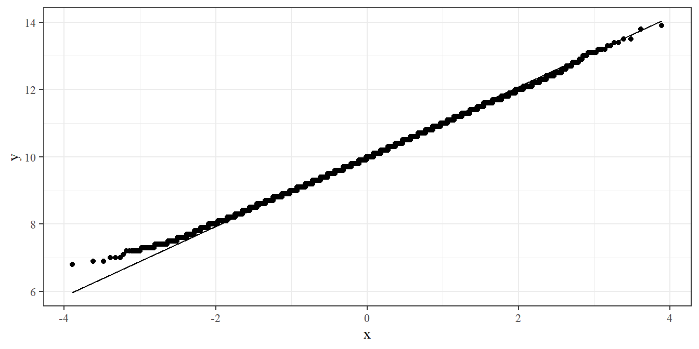
Histogrammet visar på en typisk klockform och punkterna följer linjen ungefärligt. QQ-grafens trappeffekt är typisk för diskret data. Det här tyder alltså på att t-testet är ett acceptabelt alternativ om man har en poissonfördelning med lambda runt tio och gör tio upprepningar.
Uppgift 3.19 (Svag normalapproximation) Testa att minska värdena på n och lambda. Vad är de lägsta värdena som ger ett histogram med en symmetrisk fördelning och punkter nära linjen i QQ-grafen?
Det kan också finnas situationer där någon matematisk transformation kan göra icke-normal data till normalfördelad data. Vanliga transformationer är att ta en kvadratrot eller att logaritmera datan. Som exempel kan vi återvända till Gapminder-datan vi använde i en tidigare datorövning. Paketet patchwork kan användas för att placera flera grafer bredvid varandra. Den exakta koden är mindre viktig här.
library(gapminder)
gapminder_2007 <- gapminder %>% filter(year == 2007)
g1 <- ggplot(gapminder_2007, aes(pop)) + geom_histogram(bins = 30)
g2 <- ggplot(gapminder_2007, aes(sample = pop)) + geom_qq() + geom_qq_line()
g3 <- ggplot(gapminder_2007, aes(sqrt(pop))) + geom_histogram(bins = 30)
g4 <- ggplot(gapminder_2007, aes(sample = sqrt(pop))) + geom_qq() + geom_qq_line()
g5 <- ggplot(gapminder_2007, aes(log10(pop))) + geom_histogram(bins = 30)
g6 <- ggplot(gapminder_2007, aes(sample = log10(pop))) + geom_qq() + geom_qq_line()
library(patchwork)
g1 + g3 + g5 + g2 + g4 + g6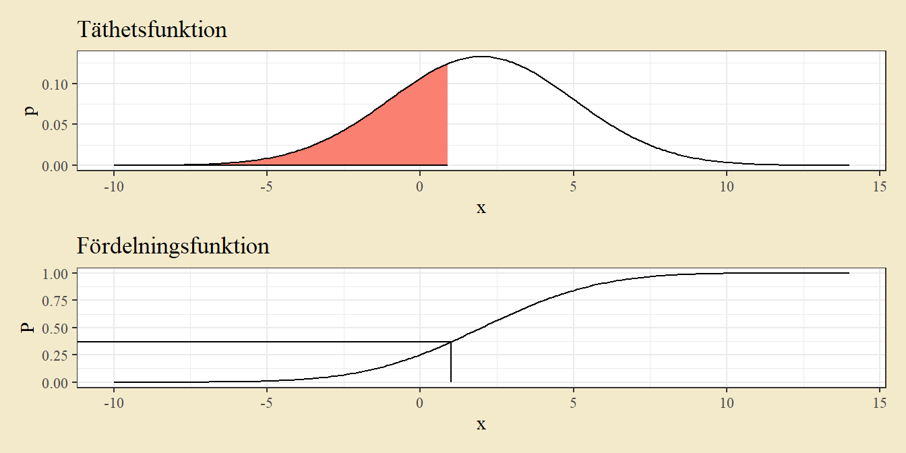
I grafen har vi den ursprungliga variabeln (befolkning per land 2007), den kvadratrot-transformerade variabeln (sqrt()) och den log-transformerade variabeln (log10()). De två första fallen påverkas kraftigt av extremvärden och är klart icke-normala medan den log-transformerade variabeln ger en ungefärlig normalkurva och följer diagonalen väl i QQ-grafen.
Uppgift 3.20 (Transformera medellivslängd) Använd kodstycket ovan som mall och ta fram grafer för medellivslängd (lifeExp) istället för befolkningsstorlek (pop). Visar grafen samma mönster som för befolkningsdatan?
3.6 Bonus. Simuleringar för t-test och konfidensintervall
Följande kod simulerar ett dataset om tio observationer från en normalfördelning med medelvärde 7 och standardavvikelse 5, beräknar ett hypotestest med nollhypotesen att populationsmedelvärdet är 7, och beräknar ett konfidensintervall.
##
## One Sample t-test
##
## data: dat_sim$x
## t = -0.72636, df = 9, p-value = 0.4861
## alternative hypothesis: true mean is not equal to 7
## 95 percent confidence interval:
## 2.459928 9.333133
## sample estimates:
## mean of x
## 5.89653Uppgift 3.21 (Upprepad simulering) Kör de två raderna i stycket ovan ett tiotal gånger. Du bör se att man ibland förkastar nollhypotesen trots att den ska stämma. Kan du få en känsla för hur stor andel av gångerna man felaktigt förkastar?
Låt oss upprepa simuleringen tusen gånger. Ett sätt är att upprepa ett steg flera gånger är genom en for-loop.
dat_sim <- data.frame()
for(i in 1:1000){
new_data <- data.frame(x = rnorm(10, mean = 7, sd = 5))
test <- t.test(new_data$x, mu = 7)
new_results <- data.frame(t_value = test$statistic, p_value = test$p.value,
ci_lower = test$conf.int[1], ci_upper = test$conf.int[2])
dat_sim <- bind_rows(dat_sim, new_results)
}Enligt statistisk teori ska t-värdet följa en t-fördelning med nio frihetsgrader. Vi kan undersöka det genom ett histogram med en överliggande t-fördelning.
ggplot(dat_sim) +
geom_histogram(aes(t_value, y = ..density..), bins = 50, fill = "white", color = "black") +
geom_function(fun = dt, args = list(df = 9), color = "red", size = 1)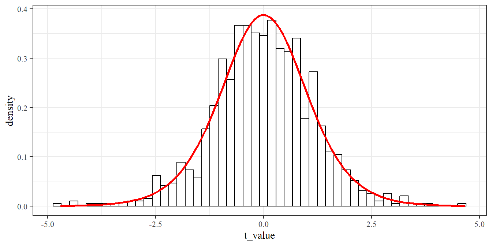
Den teoretiska t-fördelning passar histogrammet nästan perfekt.
Vidare ska p-värdet vara under fem procent fem procent av gångerna.
## [1] 0.06Även det stämmer någorlunda väl. Det här innebär alltså att om man har en signifikansnivå på fem procent kommer man förkasta nollhypotesen fem procent av gångerna även om nollhypotesen stämmer. Det kallas ett falskt positivt utfall.
Uppgift 3.22 (Simulerade konfidensintervall) Hur många av de simulerade konfidensintervallen täcker värdet 7?
Uppgift 3.23 (Signifikant skillnad) Stycket nedan simulerar data när populationsmedelvärdet är 9 och t-test har nollhypotesen att populationsmedelvärdet är 7. Här vill vi alltså förkasta nollhypotesen.
dat_sim <- data.frame()
for(i in 1:1000){
new_data <- data.frame(x = rnorm(10, mean = 9, sd = 5))
test <- t.test(new_data$x, mu = 7)
new_results <- data.frame(t_value = test$statistic, p_value = test$p.value,
ci_lower = test$conf.int[1], ci_upper = test$conf.int[2])
dat_sim <- bind_rows(dat_sim, new_results)
}Använd kod från den första simuleringen för att undersöka hur väl histogrammet stämmer med den teoretiska fördelningen och för att se hur stor andel av gångerna man förkastar nollhypotesen på signifikansnivån 5 procent.
Uppgift 3.24 (50/50) Stycket nedan simulerar data när populationsmedelvärdet är 9 och t-test har nollhypotesen att populationsmedelvärdet är 7. Ändra värdet för n och se hur det påverkar andelen gånger man förkastar nollhypotesen.
n <- 10
dat_sim <- data.frame()
for(i in 1:1000){
new_data <- data.frame(x = rnorm(n, mean = 9, sd = 5))
test <- t.test(new_data$x, mu = 7)
new_results <- data.frame(t_value = test$statistic, p_value = test$p.value,
ci_lower = test$conf.int[1], ci_upper = test$conf.int[2])
dat_sim <- bind_rows(dat_sim, new_results)
}
mean(dat_sim$p_value < 0.05)Ungefär hur många observationer behövs för att ha femtio procents sannolikhet att förkasta nollhypotesen?
Uppgift 3.25 (Konfidensintervallets bredd) Ett konfidensintervall blir smalare och smalare ju större stickprovet är. Koden nedan ger medelvärdet för stickprovsbredden i simulerad data med standardavvikelsen 1.
n <- 10
dat_sim <- data.frame()
for(i in 1:1000){
new_data <- data.frame(x = rnorm(n, mean = 0, sd = 1))
test <- t.test(new_data$x, mu = 7)
new_results <- data.frame(t_value = test$statistic, p_value = test$p.value,
ci_lower = test$conf.int[1], ci_upper = test$conf.int[2])
dat_sim <- bind_rows(dat_sim, new_results)
}
mean(dat_sim$ci_upper - dat_sim$ci_lower)Ungefär hur många observationer behövs för att konfidensintervallets bredd ska bli under 1, under 0.9, under 0.8, och så vidare ned till 0.1?